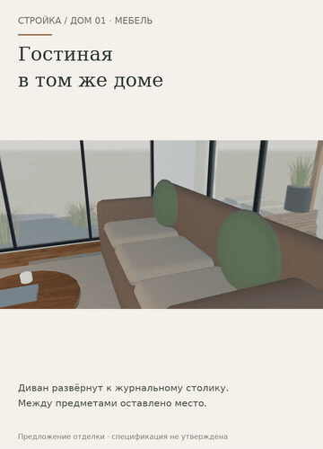

Предыдущий этап. Актуально: дневной и вечерний свет →
Тот же дом. Удобнее рассмотреть детали.
Обновлённая зона отдыха, стулья с изогнутыми спинками, мягкие детали спальни и проходы, проверенные в модели. Три оформления и общий выбор сохранены.
Открыть анимированную GIF-версию · Столовая крупно
Если видео не открывается — показать GIF здесь

Открыть интерактивный прототип →
Предыдущий этап: общая страница →
Монтаж настоящих экранов прототипа 18, не непрерывная запись и не замер FPS. Нативная мебель и карта препятствий обновлены; архитектурные элементы сохранены. Эргономика, конструкции, изделия и цены не утверждены. Физический iPhone не проверен. Рабочий сайт и сервер не менялись.